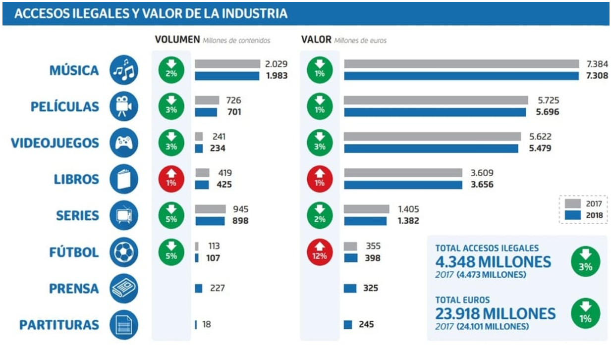

Diccionario
Propiedad Intelectual
La propiedad intelectual se refiere a los derechos legales que protegen las creaciones de la mente humana. Estas creaciones pueden incluir obras literarias, artísticas, científicas, invenciones, marcas comerciales y secretos comerciales. En el contexto digital, la propiedad intelectual se vuelve aún más relevante debido a la facilidad de copiar, distribuir y modificar contenido en línea..
Derechos de autor (copyright)
Protegen las obras originales, como libros, música, películas, fotografías y software. Los creadores tienen el derecho exclusivo de copiar, distribuir y adaptar sus obras durante un período determinado (generalmente toda su vida más un número específico de años después de su fallecimiento). En Internet, es fundamental respetar los derechos de autor al compartir contenido. No debemos descargar, copiar o distribuir material protegido sin permiso.
Licencias de uso
Definen cómo se puede utilizar una obra protegida por derechos de autor.
Creative Commons
Ccontrato legal gratuito que permite a los creadores compartir su obra (fotos, música, textos, etc.) con el público, especificando de forma clara y estandarizada qué usos están permitidos y bajo qué condiciones, como la atribución (citar al autor), si el uso debe ser comercial o no, o si se permite la creación de obras derivadas. No reemplaza los derechos de autor, sino que los complementa, ofreciendo una forma sencilla de ceder ciertos derechos sin renunciar a ellos, facilitando la difusión del conocimiento.
Piratería
La piratería de contenido (como películas, música o software) es uno de los grandes problemas en lnternet. Descargar o compartir material protegido sin autorización es ilegal y perjudica tanto a los creadores como a la industria.
https://lopegonzalez.es/eso-y-bachillerato/digitalizacion-4o-
eso/tema-7-ciudadania-digital-critica/. Piratería (Dominio público)

{kind=link}
{kind=link}
{kind=link}
{kind=link}